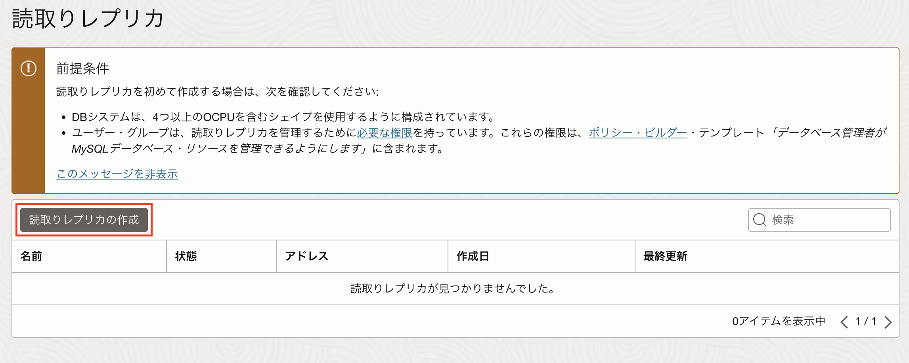
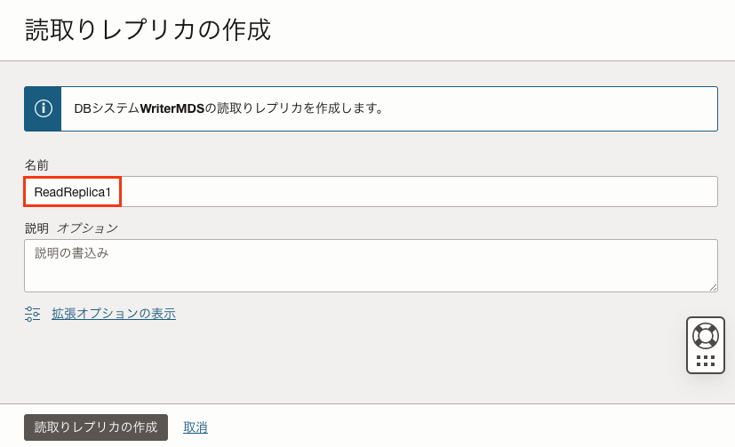
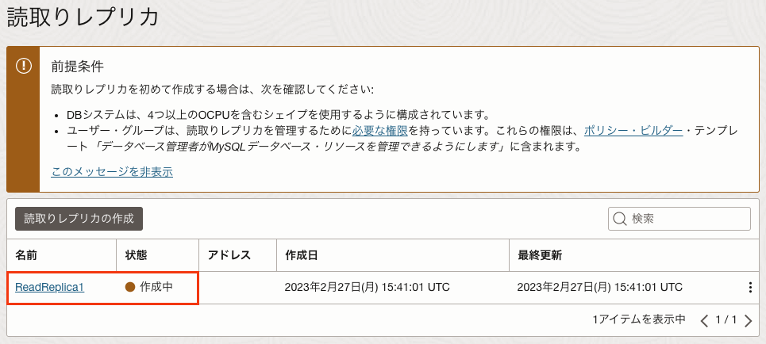
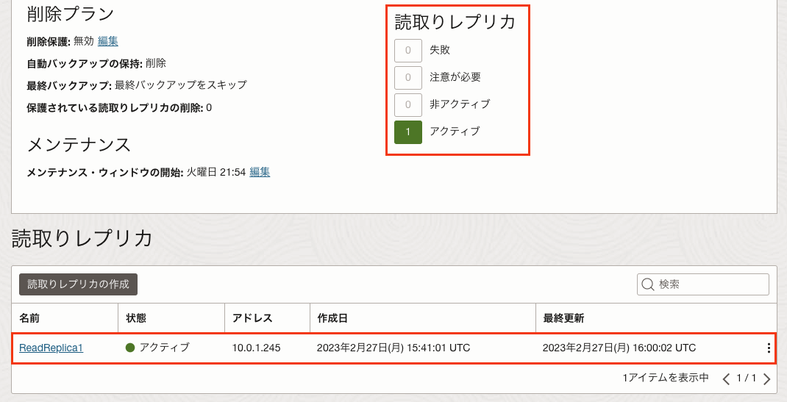
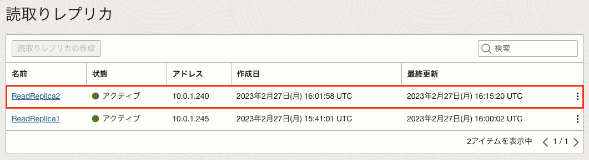

Oracle Cloud Infrastructure では、MySQL Database Service(MDS)が利用できます。MDSはAlways Freeの対象ではないため、使用するためにはクレジットが必要ですが、トライアルアカウント作成時に付与されるクレジットでも使用可能です。
このチュートリアルでは、参照処理の負荷分散を実現できるリードレプリカを構成し、動きを確認します。リードレプリカもエンドポイントもマネージドで提供されているため、簡単に利用できるのが特徴です。
所要時間 : 約50分 (約30分の待ち時間含む)
前提条件 :
- Oracle Cloud Infrastructure の環境(無料トライアルでも可) と、管理権限を持つユーザーアカウントがあること
- OCIコンソールにアクセスして基本を理解する - Oracle Cloud Infrastructureを使ってみよう(その1) を完了していること
- クラウドに仮想ネットワーク(VCN)を作る - Oracle Cloud Infrastructureを使ってみよう(その2) を完了していること
- インスタンスを作成する - Oracle Cloud Infrastructureを使ってみよう(その3) を完了していること
注意 : チュートリアル内の画面ショットについては Oracle Cloud Infrastructure の現在のコンソール画面と異なっている場合があります。
目次：
- 1. リードレプリカとは?
- 2. MDSの作成(ソースとなるMDS)
- 3. リードレプリカの作成
- 4. リードレプリカの確認(ロードバランサー経由での接続)
- 5. リードレプリカへの接続確認(リードレプリカに直接接続)
- 6. リードレプリカの確認)
1. リードレプリカとは?
リードレプリカは、参照処理を負荷分散する目的で使用される参照専用の複製です。参照処理の同時実行数が多いシステムでは、リードレプリカを使って負荷分散することが効果的です。
MDSのリードレプリカは非同期レプリケーションを使って構成されていますので、リードレプリカから参照したデータは最新のデータでは無い可能性があることに注意して下さい。ソースのMDSで更新したデータは随時リードレプリカに伝搬されるため、参照処理をリードレプリカで処理しても問題ないケースが多いです。ただし、必ず最新のデータを参照する必要がある処理についてはソースのMDSから参照する必要があります。
リードレプリカへのアクセス方法は、以下2つの方法があります。なお、ロードバランサーの設定は自動化されているため、ユーザーがロードバランサーの存在や設定を意識する必要はありません。
- ロードバランサーを経由してアクセスする。この場合、接続先はリードレプリカ全体でロードバランスされる。
(Amazon Auroraのリーダーエンドポイントに相当) - リードレプリカ毎に設定されたエンドポイント(プライベートIPアドレス)を使用してアクセスする。この場合、それぞれのリードレプリカに直接接続する。
(Amazon Auroraのインスタンスエンドポイントに相当)
また、リードレプリカに関して、本チュートリアル作成時点(2023年3月時点)で以下の制限事項があります。
リードレプリカの制限事項(2023年3月時点)
- ソースとなるMDSのOCPUが4OCPU以上必要
- リードレプリカのスペックは、ソースとなるMDSのスペックと同一になる
(リードレプリカだけスペックを落とす、といったことはまだできない) - リードレプリカの個数は最大18個まで
- ロードバランサーからリードレプリカにアクセスするための帯域は最大8Gbps
2. MDSの作成(ソースとなるMDS)
ソースとなるMDSを作成します。クラウドでMySQL Databaseを使う - Oracle Cloud Infrastructureを使ってみよう(その9) の手順に従ってソースとなるMDSを作成します。(その9)と区別するために、MDSの名前は「WriterMDS」にします。また、「2. MDSの作成」だけでなく、「3. セキュリティリストの修正(イングレス・ルールの追加)」、「4. MySQLクライアントのインストール」、「5. 作成したMDSの確認」まで実行し、worldデータベース、world_xデータベースも作成しておきます。
この時、前述の制限事項があるためOCPUが4以上のMDSを作成して下さい。OCPUが4以上のMDSを作成する場合、ハードウェアの構成部分のシェイプの変更をクリックして、4OCPU以上のシェイプを選択します。以下のスクリーンショットは、CPUの種類がE4、CPU数が4OCPU、メモリーサイズが64GBのシェイプ(MySQL.VM.Standard.E4.4.64GB)を選択した例です。
なお、現在MDSでサポートされているシェイプについては、こちらのドキュメントを参照して下さい。
3. リードレプリカの作成
リードレプリカを2つ作成します。
-
先ほど作成したMDS(WriterMDS)をコンソールから選択し、画面左下のリソース → 読取りレプリカ をクリックします。そして表示された画面から読取りレプリカの作成をクリックします。
 -
名前に「ReadReplica1」と入力し、読取りレプリカの作成をクリックします。ReadReplica1の状態が作成中になり、15分〜20分程度で状態がアクティブに変わります。また、読取りレプリカのアクティブの数が「1」になっていることも確認します。 (本ステップの待ち時間に、先行して次のステップも実行することでトータルの待ち時間を短縮できます)
 -
同様の手順で2つ目のリードレプリカを作成します。名前は「ReadReplica2」で作成します。

4. リードレプリカへの接続確認(ロードバランサー経由での接続)
作成したリードレプリカへロードバランサー経由で接続する方法を確認します。
-
WriterMDSをコンソールから選択し、画面左下のリソース → エンドポイント をクリックします。そして表示された画面から読取りレプリカ・ロード・バランサのIPアドレスを確認します。
-
確認した読取りレプリカ・ロード・バランサのIPアドレスを使用してリードレプリカに接続し、「SHOW GLOBAL VARIABLES LIKE ‘bind_address’」を実行します。システム変数bind_addressの設定値に含まれるIPアドレスより、どちらのリードレプリカに接続しているかを判断できます。以下の実行例では、設定値に「10.0.1.245(ReadReplica1のIPアドレス)」が含まれているため、ReadReplica1に接続できていることが確認できます。(ReadReplica2に接続される場合もあります)
実行コマンド(コピー＆ペースト用)
SHOW GLOBAL VARIABLES LIKE 'bind_address';実行例
mysql> SHOW GLOBAL VARIABLES LIKE 'bind_address'; +---------------+-----------------------------------------+ | Variable_name | Value | +---------------+-----------------------------------------+ | bind_address | 10.0.1.245/mysql,10.5.96.6/loadbalancer | +---------------+-----------------------------------------+ 1 row in set (0.00 sec) -
ロードバランサー経由の接続では、自動的にリードレプリカ間でロードバランスされることを確認します。前ステップの操作を繰り返し実行し、接続先が切り替わることを確認します。以下の実行例では、mysqlコマンドラインクライアントの-eオプションを使用し、MDSへ接続して「SHOW GLOBAL VARIABLES LIKE ‘bind_address’」を実行することを繰り返し実行しています。(コマンドラインに直接パスワードを指定することに対する警告が出力されていますが、ここでは無視して下さい)
接続によって「10.0.1.245(ReadReplica1のIPアドレス)」と「10.0.1.240(ReadReplica2のIPアドレス)」が切り替わっていることから、ロードバランスされていることが確認できます。実行コマンド例(コピー＆ペースト用)
mysql -u root -pMySQL_8.0 -h 10.0.1.145 -e "SHOW GLOBAL VARIABLES LIKE 'bind_address'"実行例
[opc@testvm1 ~]$ mysql -u root -pMySQL_8.0 -h 10.0.1.145 -e "SHOW GLOBAL VARIABLES LIKE 'bind_address'" mysql: [Warning] Using a password on the command line interface can be insecure. +---------------+-----------------------------------------+ | Variable_name | Value | +---------------+-----------------------------------------+ | bind_address | 10.0.1.245/mysql,10.5.96.6/loadbalancer | +---------------+-----------------------------------------+ [opc@testvm1 ~]$ mysql -u root -pMySQL_8.0 -h 10.0.1.145 -e "SHOW GLOBAL VARIABLES LIKE 'bind_address'" mysql: [Warning] Using a password on the command line interface can be insecure. +---------------+-----------------------------------------+ | Variable_name | Value | +---------------+-----------------------------------------+ | bind_address | 10.0.1.245/mysql,10.5.96.6/loadbalancer | +---------------+-----------------------------------------+ [opc@testvm1 ~]$ mysql -u root -pMySQL_8.0 -h 10.0.1.145 -e "SHOW GLOBAL VARIABLES LIKE 'bind_address'" mysql: [Warning] Using a password on the command line interface can be insecure. +---------------+-------------------------------------------+ | Variable_name | Value | +---------------+-------------------------------------------+ | bind_address | 10.0.1.240/mysql,10.5.51.254/loadbalancer | +---------------+-------------------------------------------+ [opc@testvm1 ~]$ mysql -u root -pMySQL_8.0 -h 10.0.1.145 -e "SHOW GLOBAL VARIABLES LIKE 'bind_address'" mysql: [Warning] Using a password on the command line interface can be insecure. +---------------+-----------------------------------------+ | Variable_name | Value | +---------------+-----------------------------------------+ | bind_address | 10.0.1.245/mysql,10.5.96.6/loadbalancer | +---------------+-----------------------------------------+
5. リードレプリカへの接続確認(リードレプリカに直接接続)
作成したリードレプリカへ直接接続する方法を確認します。
-
WriterMDSをコンソールから選択し、画面左下のリソース → エンドポイント をクリックします。そして表示された画面からReadReplica1とReadReplica2のIPアドレスを確認します。2つのIPアドレスが異なるため、それぞれのIPアドレスを使用することで、任意のリードレプリカにアクセスできます。
-
確認したReadReplica1のIPアドレスを使用してリードレプリカに接続後、「SHOW GLOBAL VARIABLES LIKE ‘bind_address’」を実行します。以下の実行例では、システム変数bind_addressの設定値に「10.0.1.245(ReadReplica1のIPアドレス)」が含まれているため、ReadReplica1に接続できていることが確認できます。
実行コマンド(コピー＆ペースト用)
SHOW GLOBAL VARIABLES LIKE 'bind_address';実行例 (ReadReplica1で実行)
mysql> SHOW GLOBAL VARIABLES LIKE 'bind_address'; +---------------+-----------------------------------------+ | Variable_name | Value | +---------------+-----------------------------------------+ | bind_address | 10.0.1.245/mysql,10.5.96.6/loadbalancer | +---------------+-----------------------------------------+ 1 row in set (0.00 sec) -
同様に、確認したReadReplica2のIPアドレスを使用してリードレプリカに接続後、「SHOW GLOBAL VARIABLES LIKE ‘bind_address’」を実行します。以下の実行例では、設定値に「10.0.1.240(ReadReplica2のIPアドレス)」が含まれているため、ReadReplica2に接続できていることが確認できます。
実行コマンド(コピー＆ペースト用)
SHOW GLOBAL VARIABLES LIKE 'bind_address';実行例 (ReadReplica2で実行)
mysql> SHOW GLOBAL VARIABLES LIKE 'bind_address'; +---------------+-------------------------------------------+ | Variable_name | Value | +---------------+-------------------------------------------+ | bind_address | 10.0.1.240/mysql,10.5.51.254/loadbalancer | +---------------+-------------------------------------------+ 1 row in set (0.00 sec)
6. リードレプリカの確認
リードレプリカにはソースのMDSが複製され、その後の更新処理も伝播されることを確認します。また、リードレプリカは参照専用であることも確認します。
-
ReadReplica1に接続後、「SHOW DATABASES」を実行します。worldデータベース、world_xデータベースが存在するため、リードレプリカ作成時点のWriterMDSが複製されていることが分かります。
実行コマンド(コピー＆ペースト用)
SHOW DATABASES;実行例 (ReadReplica1で実行)
mysql> SHOW DATABASES; +--------------------+ | Database | +--------------------+ | information_schema | | mysql | | performance_schema | | sys | | world | | world_x | +--------------------+ 6 rows in set (0.00 sec) -
ソースのMDSで実行した更新処理がリードレプリカに反映されることを確認します。WriterMDSでtestデータベース、test.testテーブルを作成し、データをINSERTします。その後、ReadReplica1でtest.testテーブルが存在することを確認し、INSERTされたデータがSELECTできることを確認します。以下の実行例ではそれぞれのMDSでの操作をまとめて掲載していますが、コンソールを2つ開いてそれぞれWriterMDSとReadReplica1に接続し、1ステップずつ実行することで、各ステップ毎にリードレプリカに処理内容がレプリケーションされていることが確認できます。
実行コマンド(コピー＆ペースト用：WriterMDSで実行)
CREATE DATABASE ReadReplica;CREATE TABLE ReadReplica.test(id int AUTO_INCREMENT, col1 CHAR(10), PRIMARY KEY(id));INSERT INTO ReadReplica.test VALUES(1, "TEST");SELECT * FROM ReadReplica.test;実行コマンド(コピー＆ペースト用：ReadReplica1で実行)
SHOW DATABASES;USE ReadReplica;SHOW TABLES;SELECT * FROM ReadReplica.test;実行例 (WriterMDSで実行)
mysql> CREATE DATABASE ReadReplica; Query OK, 1 row affected (0.01 sec) mysql> CREATE TABLE ReadReplica.test(id int AUTO_INCREMENT, col1 CHAR(10), PRIMARY KEY(id)); Query OK, 0 rows affected (0.00 sec) mysql> INSERT INTO ReadReplica.test VALUES(1, "TEST"); Query OK, 1 row affected (0.00 sec) mysql> SELECT * FROM ReadReplica.test; +----+------+ | id | col1 | +----+------+ | 1 | TEST | +----+------+ 1 row in set (0.00 sec)実行例 (ReadReplica1で実行)
mysql> SHOW DATABASES; +--------------------+ | Database | +--------------------+ | information_schema | | mysql | | performance_schema | | sys | | ReadReplica | | world | | world_x | +--------------------+ 7 rows in set (0.00 sec) mysql> USE ReadReplica; Reading table information for completion of table and column names You can turn off this feature to get a quicker startup with -A Database changed mysql> SHOW TABLES; +----------------+ | Tables_in_test | +----------------+ | test | +----------------+ 1 row in set (0.00 sec) mysql> SELECT * FROM ReadReplica.test; +----+------+ | id | col1 | +----+------+ | 1 | TEST | +----+------+ 1 row in set (0.00 sec) -
リードレプリカが参照専用であることを確認します。ReadReplica1でtest.testテーブルにデータをINSERTしようとするとエラーが発生します。また、システム変数「read_only」及び「super_read_only」が「ON」に設定されているため、参照専用になっていることが分かります。
(read_onlyによりMySQLサーバーを参照専用に設定できますが、read_onlyだけではCONNECTION_ADMIN権限もしくはSUPER権限を持った管理者ユーザーによる更新処理をブロックできません。super_read_onlyはCONNECTION_ADMIN権限もしくはSUPER権限を持った管理者ユーザーによる更新処理もブロックするためにMySQL 5.7で追加されたシステム変数です)実行コマンド(コピー＆ペースト用：ReadReplica1で実行)
INSERT INTO ReadReplica.test VALUES(2, "READ ONLY");SHOW GLOBAL VARIABLES LIKE '%read_only';実行例 (Replica1で実行)
mysql> INSERT INTO ReadReplica.test VALUES(2, "READ ONLY"); ERROR 1290 (HY000): The MySQL server is running with the --super-read-only option so it cannot execute this statement mysql> mysql> SHOW GLOBAL VARIABLES LIKE '%read_only'; +-----------------------+-------+ | Variable_name | Value | +-----------------------+-------+ | innodb_read_only | OFF | | read_only | ON | | super_read_only | ON | | transaction_read_only | OFF | +-----------------------+-------+ 4 rows in set (0.01 sec)
これで、この章の作業は終了です。
この章では、リードレプリカを作成し、ソースのMDSで実行した更新処理がリードレプリカにレプリケーションされることや、リードレプリカが参照専用に設定されていることを確認しました。参照処理の同時実行数が多いシステムでは、リードレプリカを使って負荷分散することで効率良くシステムを拡張できるので、活用して下さい。